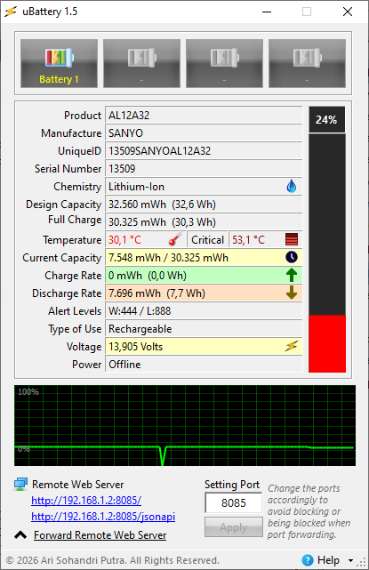

|
| uBattery |
| Home |
| Download |
| Help |
Here is a guide on how to understand uBattery to evaluate both battery health and battery behavior based on the information it provides:
1. Evaluating Battery Health
Focus on these two key values:
Design Capacity vs Full Charge Capacity
- Design Capacity → the original capacity when the battery was new
- Full Charge Capacity → the current maximum capacity
How to read it:
- Values close to each other → battery is still healthy
- Large difference → battery has degraded
Simple formula:
Health (%) =
(Full Charge Capacity / Design Capacity) × 100
Example:
30.325 / 32.560 ≈ 93%
Interpretation:
- 90–100% → Excellent
- 80–90% → Good
- 70–80% → Degrading
- <70% → Consider replacement
2. Understanding Real Remaining Energy
Current Capacity
Shows the actual remaining energy, not just a percentage.
Why it matters:
- More accurate than percentage indicators
- Can be used to estimate remaining usage time
3. Understanding Battery Usage Behavior
Discharge Rate (mW / Watts)
This is the most important parameter for behavior analysis.
- Low value → efficient usage
- High value → heavy power consumption
General guideline:
- 3–6 W → idle / very light use
- 7–15 W → normal usage
- 20 W → heavy load (gaming, rendering)
4. Estimating Remaining Runtime
Use:
- Current Capacity (Wh)
- Discharge Rate (W)
Formula:
Time (hours) = Energy (Wh) / Power (W)
This gives a real-world estimate, not a system guess.
5. Understanding Charging Behavior
Charge Rate
Shows how fast the battery is charging.
Interpretation:
- High value → fast charging
- Lower value → battery nearing full or system limiting charge
6. Monitoring Temperature
Why it matters:
Temperature is one of the main factors affecting battery lifespan.
Interpretation:
- <40°C → Safe
- 40–50°C → Warm
- 50°C → Risky
Consistently high temperature accelerates battery wear.
7. Understanding Voltage
Voltage reflects internal battery condition:
- Stable → normal
- Sudden drops → possible battery weakness
- Fluctuations → potential cell imbalance or instability
8. Reading the Graph (Behavior Over Time)
The graph helps visualize real-time behavior:
Normal pattern:
- Smooth, gradual decline → stable usage
Warning signs:
- Sudden drops → battery instability
- Sharp spikes → inconsistent power usage
- Irregular patterns → possible system or battery issues
9. Power Status (Charging vs Discharging)
- A/C Power → connected to charger
- Offline → running on battery
Use this to compare:
- Performance while charging vs not
- How quickly the battery drains
10. Practical Analysis Approach
To properly understand your battery:
A. During Idle
- Check discharge rate
- Should be low and stable
B. During Heavy Use
- Observe power spikes
- Ensure they are within reasonable range
C. While Charging
- Charge rate should decrease near full (this is normal)
D. Observe Trends Over Time
- Is capacity decreasing quickly?
- Is power usage increasing?
11. Signs of a Problematic Battery
Based on uBattery data, warning signs include:
- Rapid health decline
- High discharge rate even when idle
- Unstable graph behavior
- Sudden voltage drops
- Faster-than-normal battery drain
- Frequently high temperatures
Key Takeaway
To understand uBattery effectively:
- Health → check capacity values
- Behavior → monitor discharge rate
- Safety → watch temperature
- Stability → analyze graph and voltage
uBattery stands out because it provides:
- Direct hardware-level data
- No artificial smoothing or estimation
- Accurate insights for technical analysis
| uBattery Main Window |
 |